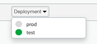
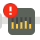

When developing new proxies you'll soon realize how important it is to be able to troubleshoot and understand what's happening in your proxy throughout all steps.
In this lab we'll cover Apigee's trace tool and how to make the most out of it.
What you'll learn
- Invoke requests from the Trace Tool
- Trace API requests flowing through the system in real time
- Different information available in the tool
- Filter only certain calls
What you'll need
- The default ‘helloworld' proxy -- download from here and deploy it to the test environment if you don't already have it in your org
- Basic understanding of the trace tool: https://docs.apigee.com/api-platform/debug/using-trace-tool-0.html
Use case
Something is not going well during development and you want to understand what's happening.
- An overview of the Trace Tool
- Sending and capturing requests via the Trace Tool
- Inspecting variables
- Capturing requests sent from elsewhere
- Filtering specific requests
Go to Develop/API Proxies
And select the sample proxy called ‘helloworld'. It should have already been there when you created your eval account.
Check that it is deployed. You should see a green circle next to the environment name, in the ‘Deployment' drop down.

If you do not see a green circle, in the same dropdown, simply click on the environment you want to deploy to:
Which will bring up a popup to confirm the deployment:
Click on ‘Deploy'
Now that the proxy is ready for execution, click on the ‘Trace' tab:

This will bring the Trace view:
- The list of transactions captured
- The URL to send requests to
- Send button to invoke requests from the Trace Tool
- The Transaction Map shows all policies and flows evaluated during the execution
- Details of all variables and properties used on the specific step execution
- Visualization Options to show/hide details
- The environment in which the trace session will run
- Filters view to configure filtering for a trace session
Transactions
All captured transactions are displayed as a stack, with the most recent ones at the top. You will see here the response code for each transaction as well as the time from receiving the request to sending the response back to the client (Elapsed time).
You need to select a specific transaction in this list in order to see more details for it.
URL
You can actually invoke any URL from here and you will see the response code next to the Send button. In reality it only makes sense to invoke a URL to the proxy you are currently tracing so you can view the details.
Send button
Will trigger a new request to the URL configured in the URL box. The response code will be displayed next to the button when the request is sent this way.
Transaction Map
The transaction map is where you will see all policies processed in a specific API transaction.
You can select individual items in the view, or hover the mouse over to see more information.
- Policies are displayed as icons. You can select a policy to see more details at that specific step of the execution
- Policies can have different symbols on them to indicate a change in the default behavior:
- policy skipped/not executed (typically associated with a condition applied to the policy)
- error generated by this policy
- policy is disabled
- Flows are represented by the vertical bars . The diamond with either an F or T inside represents evaluated flow conditions. The F is for FALSE, meaning the condition associated with the flow, evaluated to FALSE, and the T, for TRUE, for when the condition is TRUE.
- The message at certain key moments can be inspected by selecting one of the four circles

- request as received from the client
- request as being sent to the target
- response as received from the target
- response as sent to the client
- symbol for the backend being invoked
- Step Navigation buttons (prev/next) help you investigate a request step by step. You can also select any symbol in the transaction map to skip ahead or back to a specific point.
Phase Details
The details or any step are visualized at the bottom panel in 3 columns:
- variable/property name
- Values before the policy executed
- Values after the policy executed
As you select another policy or portion in the transaction map, the details will be updated to reflect what was happening at that exact moment.
In the helloworld proxy, in the trace tab, check the environment selected.
Make sure you are tracing the test environment:
Click on the ‘Start Trace Session' button.
It should turn red and display a countdown timer
The trace runs for up to 10 minutes or 20 requests captured, whichever comes first.
Check the URL to make sure it seems ok (it should point to the proxy you are tracing) and click on the ‘Send' button. You should see the Status code displayed next to the button.
You should also see the Transaction Map and Details get populated. We'll cover these in a bit.
Just as the previous step, make a few requests in a row, until you get a response code of 429.
Select one of the transactions with the 429 and then click on the Quota policy
In the details panel,
Scroll down looking for a property called ‘ratelimit.check-quota.available.count'. For this request it should show 0
Click on other transactions and look for the same variable. Also note how the icon for the policy is displayed differently when the available count is still greater than 0.
The same way that we can capture transactions sent from the trace, we can also capture all transactions to the proxy, independent from where they are made from.
Make sure you stop your trace if it is still going from before and start it again to have a fresh session.
Do not send requests from the tool itself and instead, copy the URL into a new tab in your browser.
You should see something like:
If you switch to the Apigee Trace Tool tab again, you should now see a GET request to the API
Since the request was sent from a browser, select the transaction and look for the User-Agent header (the value will be different depending on your browser and version):
The filter tool offers some basic filtering to allow you to capture certain requests coming in to the proxy.
To access the filter options, click on the ‘Filters' vertical bar:

That will bring the filters view
You have the option to filter by query parameters or headers.
For the filters to be in effect, they need to be set and then the trace needs to be started. You cannot modify the filters for an ongoing trace capture session.
Add a filter for a query parameter
In the filters view, add an entry for a new query parameter called ‘test' with a value of ‘123'
Make sure you have the right environment selected and start the trace session.
From the trace tool, send a few requests as before, without changing the url. Nothing should show up as captured.
Now, append to the URL, the query parameter with the value as we configured in the filter and click on ‘Send':
/v0/hello?test=123It should now show up in the transactions:
The same would be true if you filter by header, but the requests would have to be sent from outside the trace tool, as you cannot configure headers for the requests sent from the tool.
The trace tool allows you to download a trace session and save it for future investigation. It can be opened by anyone in any org.
Click on the 'Download Trace Session' button to download a trace XML file.
Go to Offline Trace.
Click on one of the 'Choose File' buttons, and upload the trace file you downloaded.
You can explore all of the transactions in the session and see all of the same information you had when the session was alive.
You now can use the trace tool to capture requests sent to your proxy.